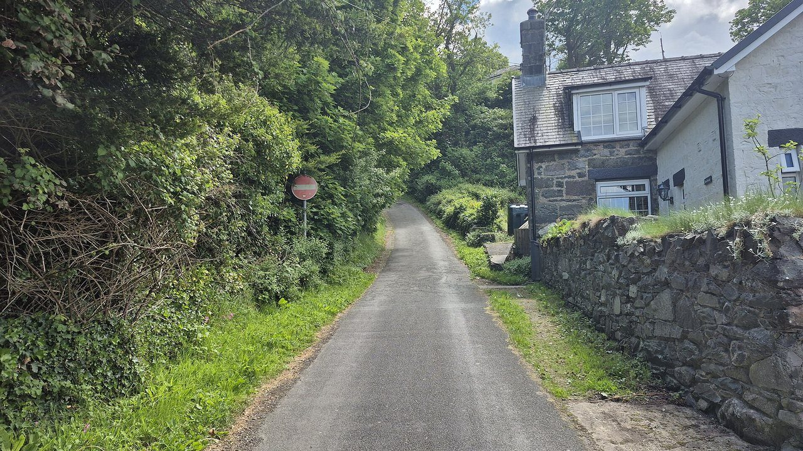

Race, Ffordd Pen Llech

Behind
Best +0:01
371W
Target 418 W-47 W
- Cadence
- 87rpm
- Heart
- 140bpm
- Speed
- 26.5km/h
Work2 of 3
9:08
Next: · 1:40 at level 11
+8.7%
65 m climbed
10.86 km
19
Resistance / 32
Solo races your best-time ghost: position reads Ahead or Behind, and solo alone gets a Pause button. Frozen at 34:52.